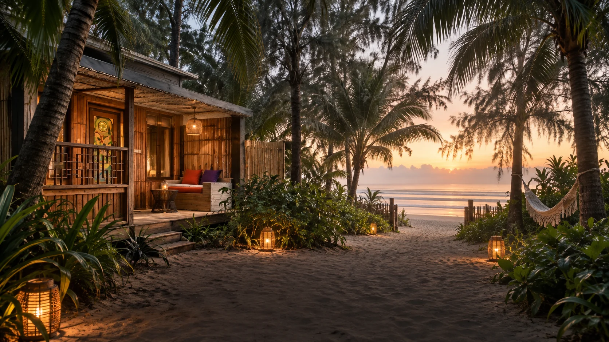
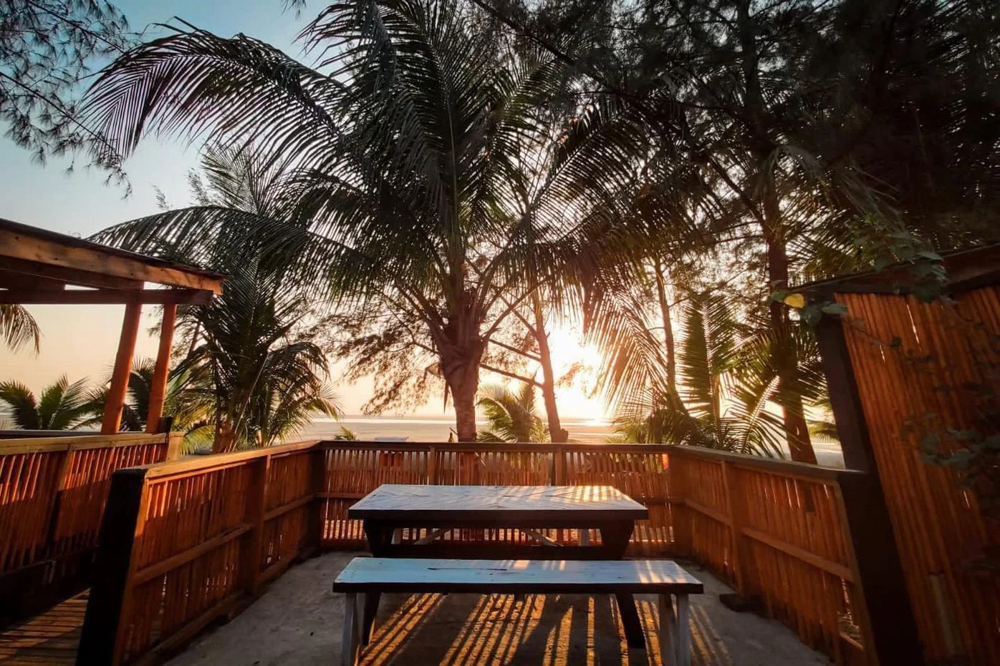
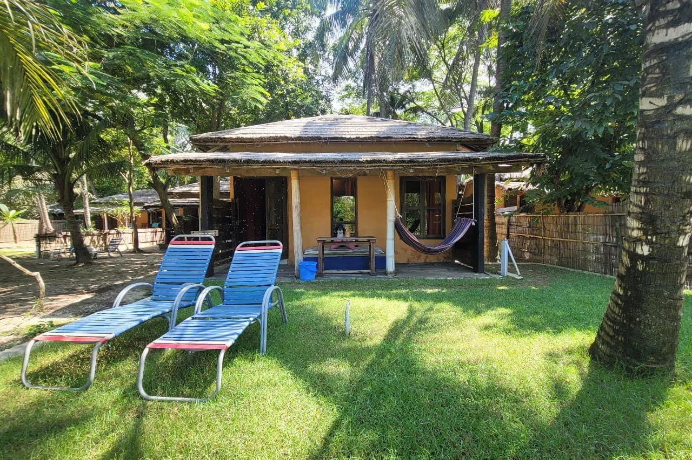
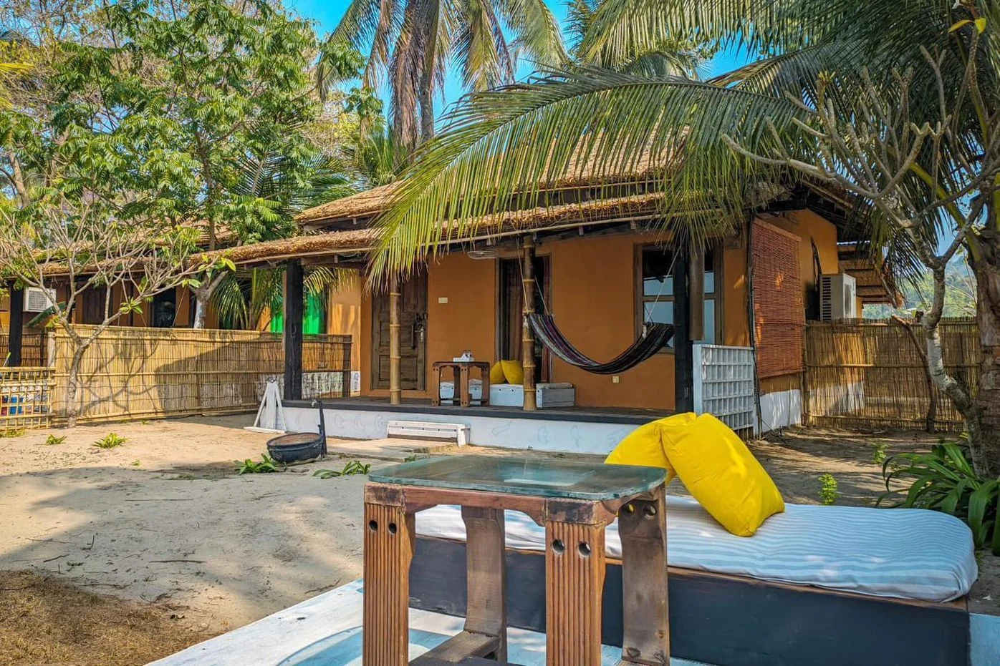

A place with a point of viewBelong to
Belong to
the moment.
The Mermaid story
A nature-led escape at the edge of the Bay of Bengal, built around a simpler kind of luxury.
We don't come to the coast to bring our usual lives with us. We come to remember how good it feels to be part of the world.

02 / Made by handShaped by
Shaped by
the place.
Handmade details, reclaimed teak and woven bamboo give Mermaid its easy warmth. Spaces feel lived in and connected to the landscape beyond their walls.
Here, comfort comes with character. Nothing needs to be polished into sameness.
03 / A living landscape
Take only the memories. Leave something growing.


“This place is for the moments you don't need to plan.”
04 / The things that matterSmall choices.
Small choices.
Lasting feeling.
- 01 / NatureMake room for the garden, the trees and the tide.
- 02 / CraftLet hands, materials and local character show.
- 03 / TableCook with the ingredients and flavors of this coast.
- 04 / TimeGive every guest permission to slow down.